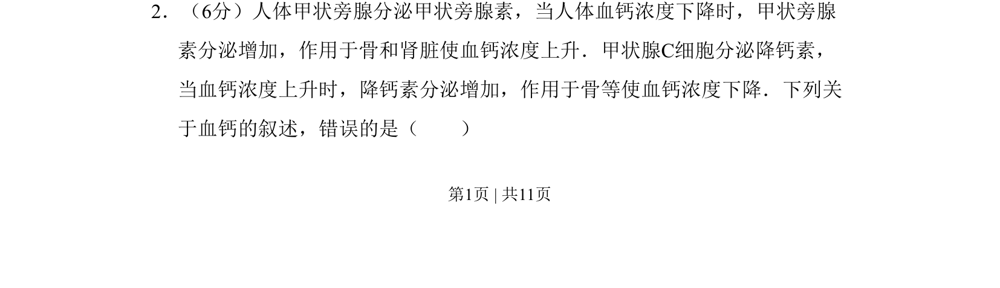
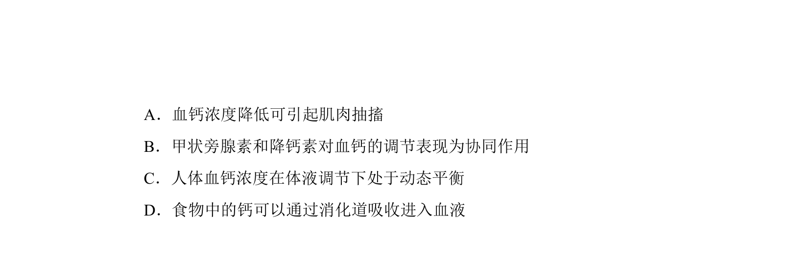
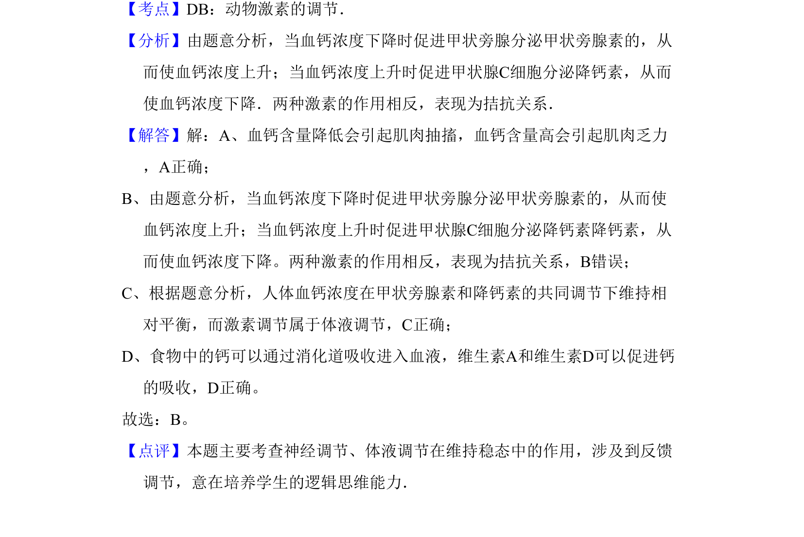

考点：激素调节 反馈调节 血钙稳态 甲状腺旁腺


甲状旁腺素和降钙素对血钙浓度的反馈调节机制

📄 原 PDF 第 1 页：
素材/真题/吉林/2008-2024·（吉林）生物高考真题/2009年高考生物试卷（全国卷Ⅱ）（解析卷）.pdf
2．（6分）人体甲状旁腺分泌甲状旁腺素，当人体血钙浓度下降时，甲状旁腺 素分泌增加，作用于骨和肾脏使血钙浓度上升．甲状腺C细胞分泌降钙素， 当血钙浓度上升时，降钙素分泌增加，作用于骨等使血钙浓度下降．下列关 于血钙的叙述，错误的是（ ）